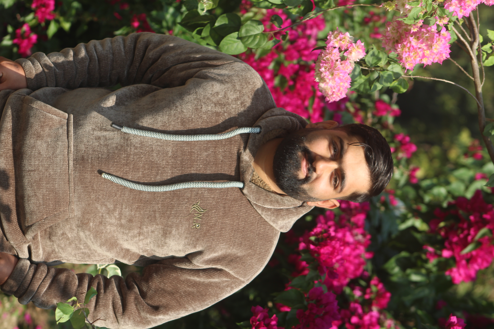

Biraj Bhattarai is an independent musical artist and composer from Nepal. Specializing in soulful instrumental tracks, he blends acoustic clarity with melodic blues and folk influences. Since 2020, Biraj has focused on the organic sound of the guitar, mastering percussive fingerstyle and melodic phrasing.
With a verified presence on YouTube and Spotify, Biraj has built a global listener base by staying true to his independent roots. His compositions serve as an intimate reflection of modern creative expression from the heart of Nepal.
Glimpses into the creative process and studio sessions.


Every piece is recorded with a focus on natural resonance. By capturing the intimate nuances of the strings, Biraj creates an expansive soundscape that bridges the gap between traditional folk and contemporary blues.
Follow for daily updates, reels, and a look behind the curtain.
View Profile